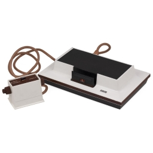
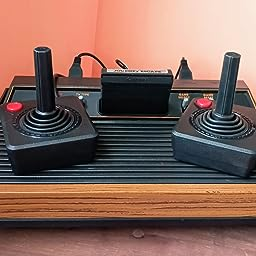
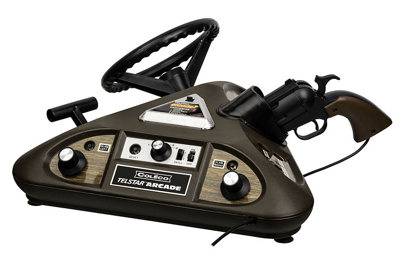
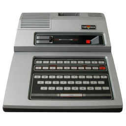
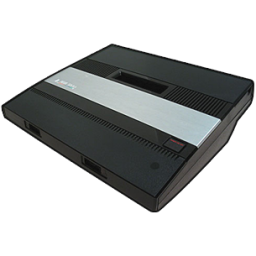
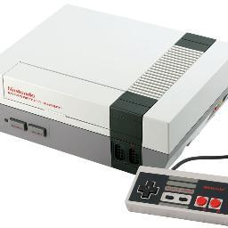
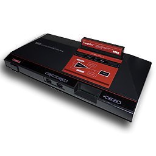
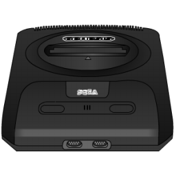
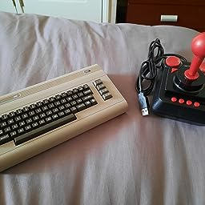
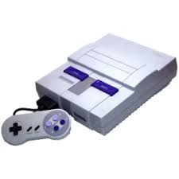

Momento nostalgico (1972-1990)
Las primera consolas fueron producto de investigacion y desarrollo y tuvieron lugar en la decada de los 60s sin fines comerciales, pero con gran exito para inspirar a creadores a ir por más y combinar el entretenimiento de la tv con un condimento dinámico.
A partir de esto, a principios de los 70s se lanzó la primera consola al mercado, la cual llamaron "Magnavox Odyssey".
Los invito a un recorrido por nuestro pasado gaming
Consolas de los 70-80-90s

Magnavox Odyssey (Mayo 1972)

Fairchild Channel F (Agosto 1976)

Atari 2600 (Octubre 1977)

Coleco Telstar Arcade (Noviembre 1977)

Magnavox Odyssey2 \ Philips Videopac (Diciembre 1978)

Atari 5200

Nintendo Entertainment System (1985)

Master System de Sega ( 1985)

Sega mega drive y Sega genesis ( 1989 )

Commodore 64 Games System ( 1990 )
